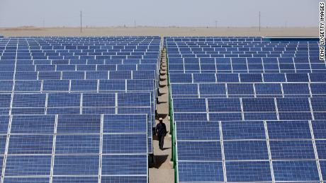
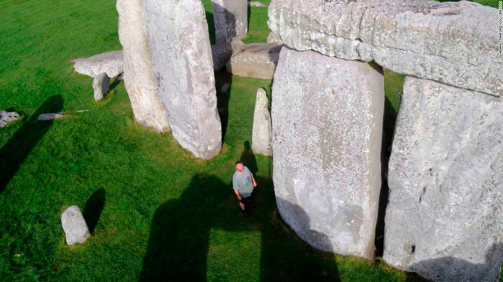
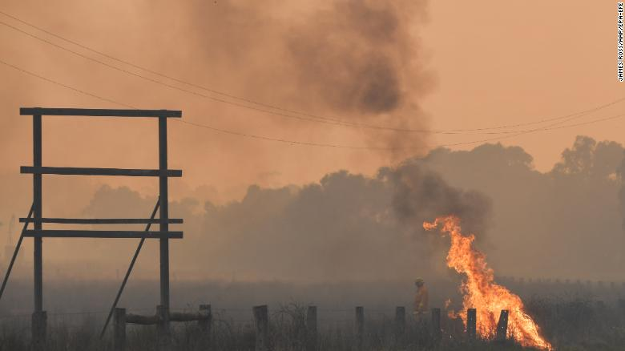

Space power plant and a mission to Mars: China's new plans to conquer the final frontier
By Euan McKirdy and Nanlin Fang, CNN
China is a world-leader in the production of solar panels - and now it's reportedly taking the tech to space.
China says it is working to develop a solar energy plant in space that could one day beam enough power back to Earth to light up an entire city.
Read more
Geologists have finally found exactly where some Stonehenge rocks came from, debunking old research
By Lauren Kent, CNN
New details are emerging about the source of the monument's building blocks.
Five thousand years after people in the British Isles began building Stonehenge, scientists now know precisely where some of the massive rocks came from and how they were unearthed.
Read more
'Act immediately to survive': Fires rip through Australia's southeast
By Joshua Berlinger, CNN
A spot fire burns on the Bunyip side of the Princes Highway in the Australian state of Victoria on Sunday.
A series of devastating brush fires have swept through Australia's southeastern state of Victoria, destroying multiple properties and forcing thousands of people to flee their homes.
Read more